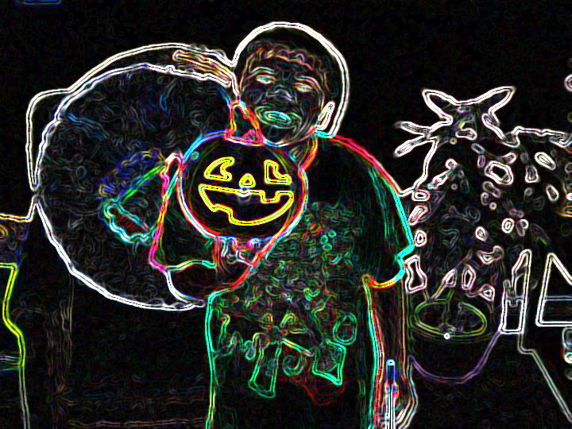

My Gallery
One of my favorite works at Mr.Singers class.
I liked this project becuase putting on filters is pretty cool and I think the pictures will look more cooler than the original. Doing this Project on my picture amused me because i barely put filters on my originl pictures on my phone plus i barely use the filters. Doing this project inspires me to put filters on my recent pictures, snapchat, and on my other project besides this. I mostly said why I like this project on the right small paragraph. But doing this is really easy because putting random filters on random pictures make it look better than before.
Why I choosed this.
I choosed this than the others is pretty is why. This is the first time I used this type of filter on one of my favorite pictures of me. And mostly I like the colors and how it looks creepy.
My second GIF this year
Making this Gif was pretty cool because i love the game tetris and anything that has a heart. Anything that has pixels is really cool. My love for tetris is beyond my love for hats, playing this game in tournaments is cool because I could maybe win a money prize.
My Cammy Gif
This is my favorite work in Mr.Singers class this year. Doing a Cammy Gif is the best Gif because I usually play as Cammy in Street Fighter. The spread sheet has more of Cammy but i used the ones that has her fighting.